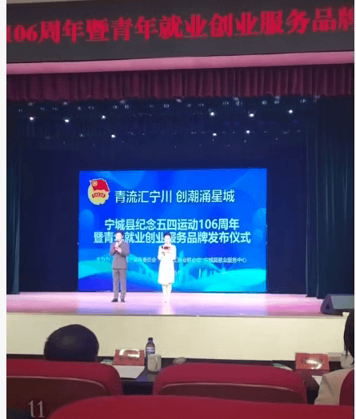

为深入弘扬五四精神，激发新时代青年创新创业活力，搭建青年成长成才服务平台，近日，宁城县隆重举行“青流汇宁川·创潮涌星城”——纪念五四运动106周年暨青年就业创业服务品牌发布仪式。本次活动由共青团宁城县委员会牵头主办，旨在通过政策赋能、资源对接、品牌引领，为全县青年就业创业搭建广阔平台，助力青年在宁城大地逐梦前行。
活动现场，首先回顾了五四运动的光辉历程与时代意义，号召广大宁城青年赓续爱国传统、勇担时代使命，在创新创业的赛道上奋力奔跑。仪式上，宁城县正式发布青年就业创业服务品牌，并推出服务青年成长发展的多项务实举措，涵盖职业技能培训、创业贷款支持、优质岗位对接、创业孵化指导、政策咨询服务等全链条内容，精准回应青年在就业创业过程中的急难愁盼问题，为青年成长发展保驾护航。
赤峰市启跃文化传媒有限公司受邀参与本次活动，公司代表全程参与了仪式与交流环节。公司代表表示，将以此次活动为契机，积极响应政府号召，充分发挥自身在直播电商、新媒体运营、数字创业领域的优势，为宁城青年提供更多实习就业岗位、创业孵化资源与行业实践机会，助力青年掌握数字技能、拓宽创业路径，带动更多青年投身乡村振兴与电商助农事业，实现个人价值与地方发展同频共振。
活动现场，青年代表们围绕就业创业话题交流互动，政策宣讲、经验分享、资源对接等环节干货满满，营造了全社会关心青年、支持青年、服务青年的浓厚氛围。此次仪式不仅是对五四精神的传承弘扬，更是宁城县完善青年就业创业服务体系、优化青年发展环境的重要举措，为广大青年搭建了对接资源、交流学习、共谋发展的优质平台。
下一步，宁城县将持续深化青年就业创业服务，不断完善政策供给、强化资源保障、搭建成长平台，推动更多青年就业创业项目落地见效。赤峰市启跃文化传媒有限公司也将积极践行企业社会责任，依托自身数字媒体与电商运营优势，助力宁城青年在创新创业浪潮中勇立潮头、建功立业，为宁城县高质量发展注入源源不断的青春动能。
